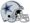

De: La Frikipedia, la enciclopedia extremadamente seria.
De: La Frikipedia, la enciclopedia extremadamente seria. De: La Frikipedia, la enciclopedia extremadamente seria.
| Antonio Ramiro Romo  | |||
| |||
| Nacimiento | En USA | ||
| Nacionalidad | Gringo | ||
| Demarcación | Mariscal | ||
| Club actual | Dallas Cowboys | ||
| TouchDowns | Cuando Miles Austin le hace el favor | ||
| Año de debut | 2006 | ||
| Club de debut | Dallas | ||
| notas | | ||
«¡Guahhhhhhh!»
~ Romo Alcanzado la inmortalidad
«¡Guahhhhhhh!»
~ Romo Inmolándose por todos los furbolistas americanos de el mundo
«¡Guahhhhhhh!»
~ Romo Como la cago en youtube
«¡Guahhhhhhh!»
~ Romo ganándose el pan de cada día
«¡Guahhhhhhh!»
~ Romo en una peli porno con Jessica Simpson
Tony Romo es un furbolista americano que juega con los Dalas Caubois, Romo es uno de los  mexicoamericanosque hay en gringolandia, el pobr tipo nunca a llegado a ningun Supertazón como todos los mariscales normales.
mexicoamericanosque hay en gringolandia, el pobr tipo nunca a llegado a ningun Supertazón como todos los mariscales normales.
A Romo le quiso dar por jugar con la universidad de Eastern Illions (alguien de aqui la conoce) asi que los dallas caubois lo contrataron en el 2006 para poder tener a quien reemplazar a Viny Testaverde y luego reemplasarlo por Mark Sanchez (lastimma que se quedo con los jets)
Romo se fue con los caubois de dallas (caubois significa chicos vacas para los indios que no saben hablar ingles) asi que allí juega actualmente, lo querian reemplazar pero llego Miles Austin asi que gracias al Dios del furbo americano puede hacer algo y no lo van a querer correr.
Romo tuvo una relación sexual amorosa con Jessica Simpson pero rompio con el porque era gay la cago en un juego contra Seattle, asi que rompieron y Romo se puso muy triste, tan triste pero tan triste que le daba lastima a todo mundo y Dallas no llego ni a los putos play offs del 2008 gracias a eso.
Es una morra que nadie solo es conocida por que su harmana si se ha ganado un monton de fama en gossip girl conoce pero es novia actual de Tony Romo (para suerte de Romo ahora TO no lo criticca por no estar en su equipo) asi que ahora no debe cagarla como la otra vez con Jessica para que no lo cague su entrenador.
| |
|---|
| AFC Sur | AFC Oeste | NFC Norte | NFC Oeste | Súper Tazón |
| | |||
|---|---|---|---|
|
Deportes
Deportistas
Competiciones
Otros
Artes Marciales
|
Autor(es):